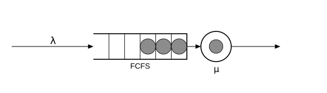
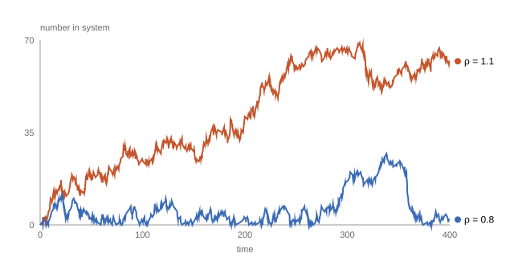

Arrivals and the waiting line
The first page fed a server one job at a time. Real work does not arrive politely. Jobs arrive at random, sometimes in bursts, and when a job finds the server busy it has to wait. This page adds the waiting line — the buffer — and the single number that decides whether the line stays short or grows forever.
Poisson arrivals
The standard model of "jobs arrive at random" is the Poisson process. It has one parameter, the arrival rate $\lambda$ (lambda): the average number of arrivals per unit of time. Equivalent description: the gaps between arrivals are independent draws from an exponential distribution with mean $1/\lambda$. That is exactly what
source!(net, :arrive; interarrival = Law(:Exponential, scale = inv(Param(:lambda))))declares: interarrival times are exponential, so the source is a Poisson process.
The exponential distribution is memoryless: however long you have already waited for the next arrival, the remaining wait has the same distribution as the original one. Buses that arrive like this are infuriating, but the property makes the mathematics of the pages that follow tractable, which is why it is the default assumption everywhere in queueing.
The buffer
A station now has two parts: the buffer, where jobs wait, and the server. Arriving jobs join the buffer; whenever the server frees up, it takes the next job according to the discipline (still first come, first served — FCFS):
b = buffer(Point(-40, 0), 160, 44; slots = 5, jobs = [0, 0, 0])
discipline(Point(-40, 0), 160, 44, "FCFS")
s = server(Point(90, 0), 26; inservice = 0, label = L"\mu")
flow(Point(-260, 0), b.entry; label = L"\lambda")
flow(b.exit, s.entry)
flow(s.exit, Point(200, 0))
Utilization and stability
Work arrives at rate $\lambda$ jobs per minute, and each job needs $1/\mu$ minutes of service on average. So the fraction of its time the server must spend busy just to keep up is
\[\rho = \frac{\lambda}{\mu}.\]
$\rho$ (rho) is called the utilization. It is the single most important number about a queue.
- If $\rho < 1$, the server can keep up. The line grows and shrinks but keeps returning to empty. The queue is stable.
- If $\rho > 1$, work arrives faster than it can be served. No discipline, no cleverness helps: the line grows without bound. The queue is unstable.
Let us watch both happen. The model is the same one-station network as before; we only change $\theta$. First $\lambda = 0.8, \mu = 1$ (so $\rho = 0.8$), then $\lambda = 1.1, \mu = 1$ (so $\rho = 1.1$). The number in the system rises by one at each arrival and falls by one at each service completion, so a single pass over the record gives the whole trajectory:
using Concourse
net = QueueNetwork(param_names = (:lambda, :mu))
source!(net, :arrive; interarrival = Law(:Exponential, scale = inv(Param(:lambda))))
station!(net, :desk; discipline = FCFS(), servers = 1,
service = Law(:Exponential, scale = inv(Param(:mu))))
sink!(net, :done)
route!(net, :arrive, Always(:desk))
route!(net, :desk, Always(:done))
m = compile(net)
function number_over_time(rec)
ts = Float64[0.0]; ns = Int[0]; n = 0
for (k, t) in zip(rec.key, rec.time)
n += (k[1] == :arrival) ? 1 : -1
push!(ts, t); push!(ns, n)
end
push!(ts, rec.horizon); push!(ns, n)
ts, ns
end
t_stable, n_stable = number_over_time(simulate(m, [0.8, 1.0], 400.0; seed = 7))
t_unstable, n_unstable = number_over_time(simulate(m, [1.1, 1.0], 400.0; seed = 7))
println("final counts: rho = 0.8 ends at ", n_stable[end],
" jobs; rho = 1.1 ends at ", n_unstable[end], " jobs")final counts: rho = 0.8 ends at 2 jobs; rho = 1.1 ends at 62 jobs
The stable line keeps coming back to zero. The unstable line has a random wobble on top of a straight climb: on average it gains $\lambda - \mu = 0.1$ jobs per minute, and after 400 minutes it is roughly 40 jobs deep and still climbing.
Measuring the utilization
For a stable queue, $\rho$ is not just a threshold — it is a prediction: the long-run fraction of time the server is busy equals $\rho$ exactly. The simulation can check that. time_average integrates any function of the state over the run; here the function is "is the desk's server occupied". We average eight independent runs and report the spread of the estimate (a standard error):
using Statistics
desk = m.names[:desk]
busy(st) = isempty(st.srv[desk]) ? 0.0 : 1.0
vals = [time_average(busy, m, simulate(m, [0.8, 1.0], 2000.0; seed = 100 + r))
for r in 1:8]
println("measured busy fraction: ", round(mean(vals), digits = 3),
" ± ", round(std(vals) / sqrt(8), digits = 3))
println("theory: rho = 0.8")measured busy fraction: 0.8 ± 0.01
theory: rho = 0.8At $\rho = 1.1$ no such number exists to measure: a time average over a growing line depends on how long you watch. Stability first, statistics second — a theme the measurement page returns to.
How long is the line, on average, when $\rho < 1$? That answer needs one more ingredient — the service discipline — and then the M/M/1 page gives the famous formula.
Next: who gets served first.